Before: unchanged 78f9686. After: isolated five-fix branch. Local Chromium and fixture/guest data. Images contain no real credentials or learner records. Resource captures show the expanded disclosure. Click images for full resolution.
Computed styles, responsive overflow and axe results · Sanitized local CORS trace. The CORS trace exercises the unchanged handler locally; live backend health, configuration and authenticated preview behavior remain unverified.
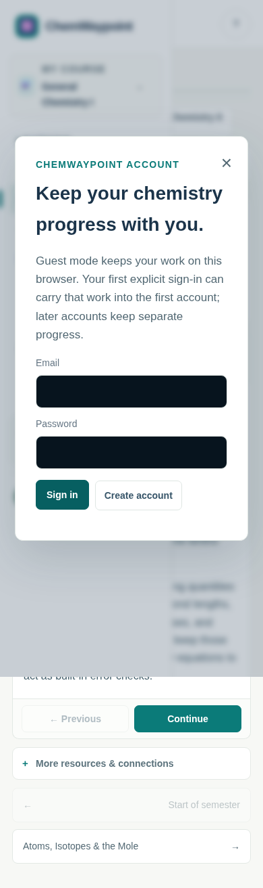
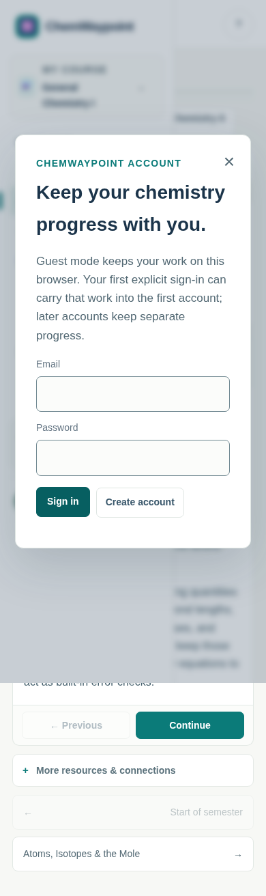
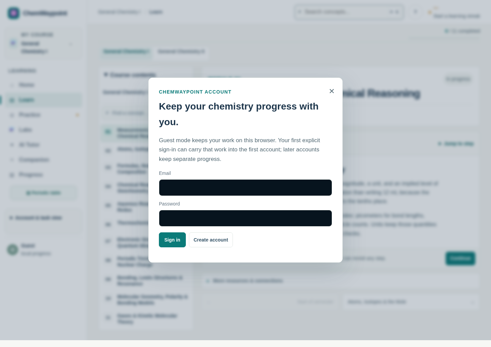
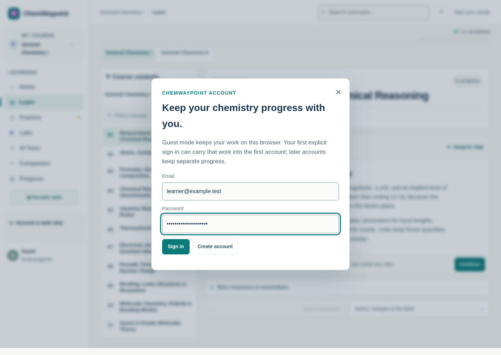
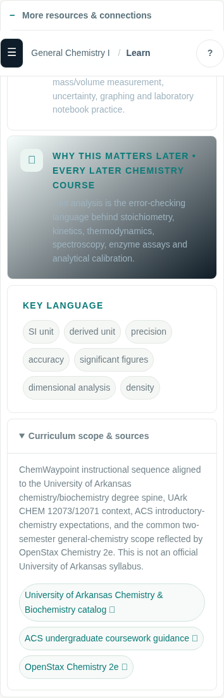
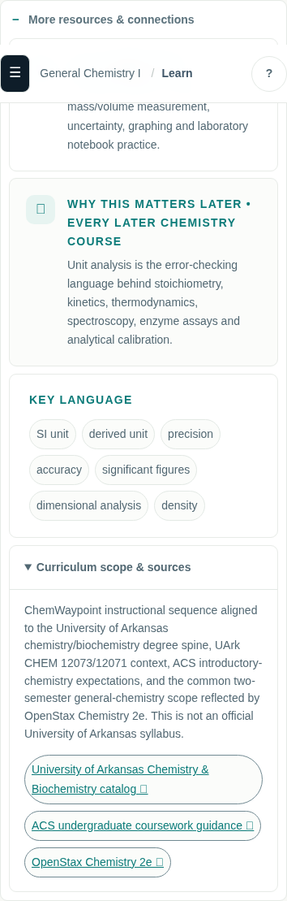
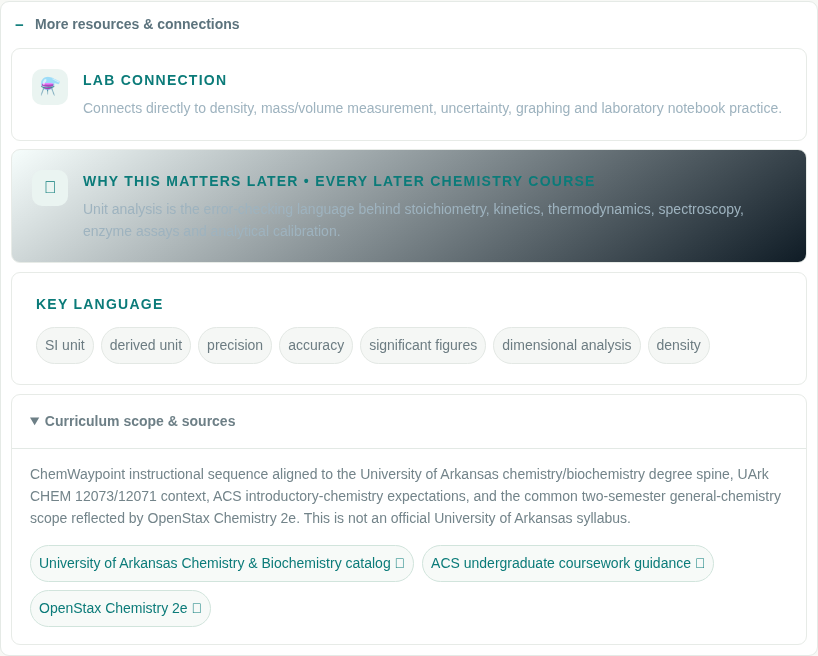
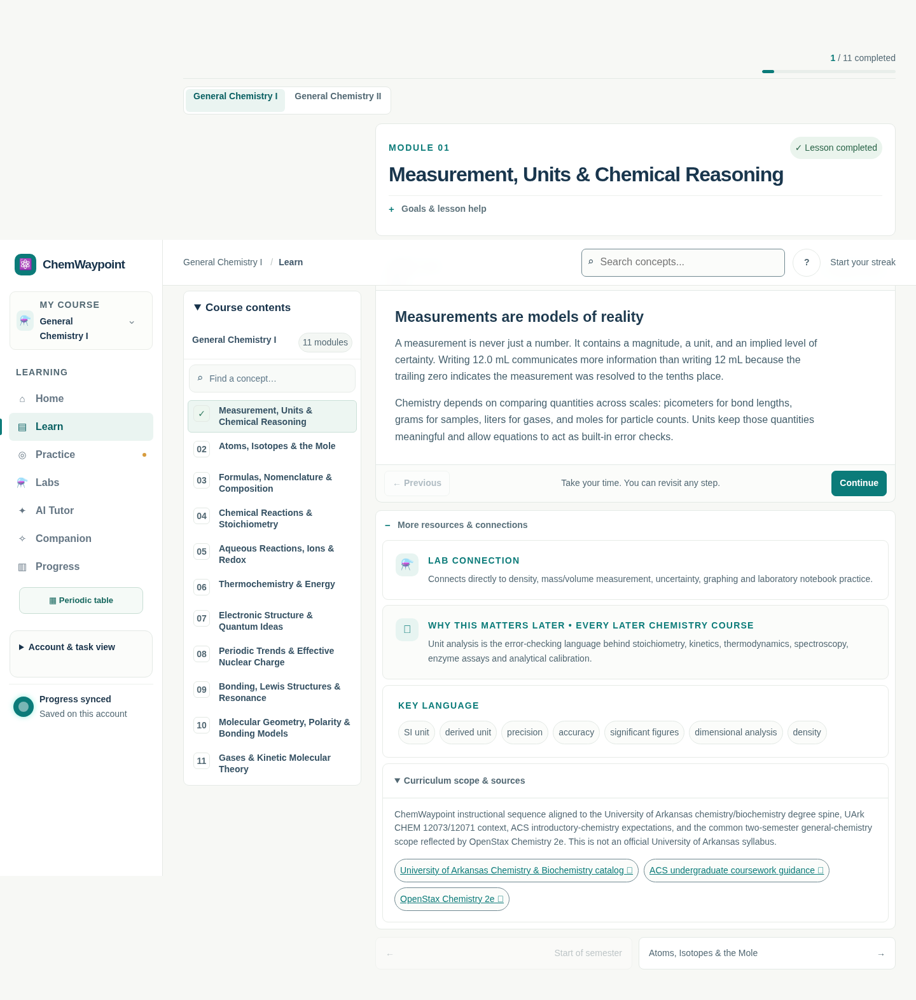
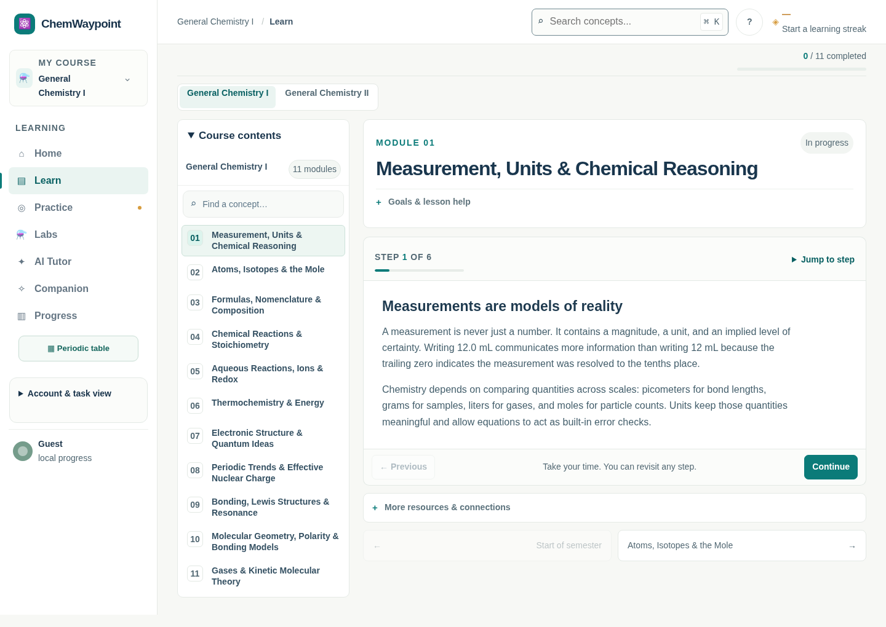
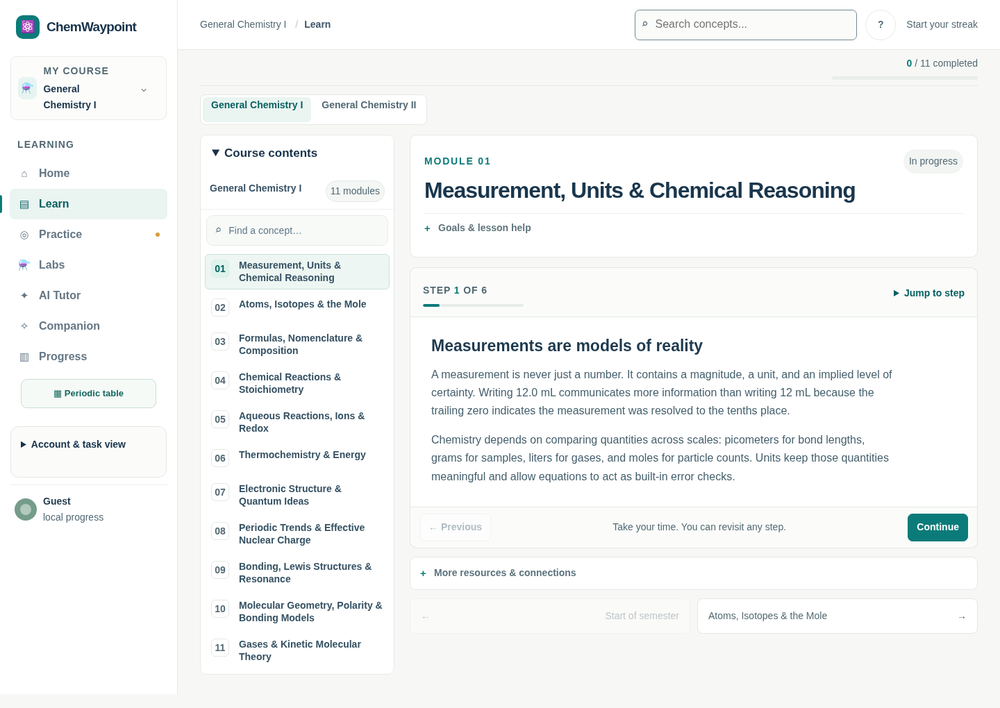
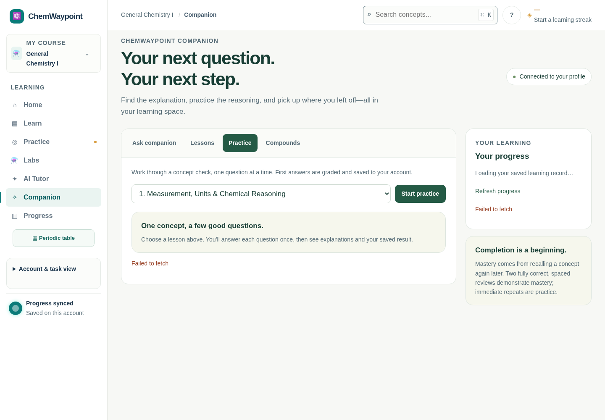
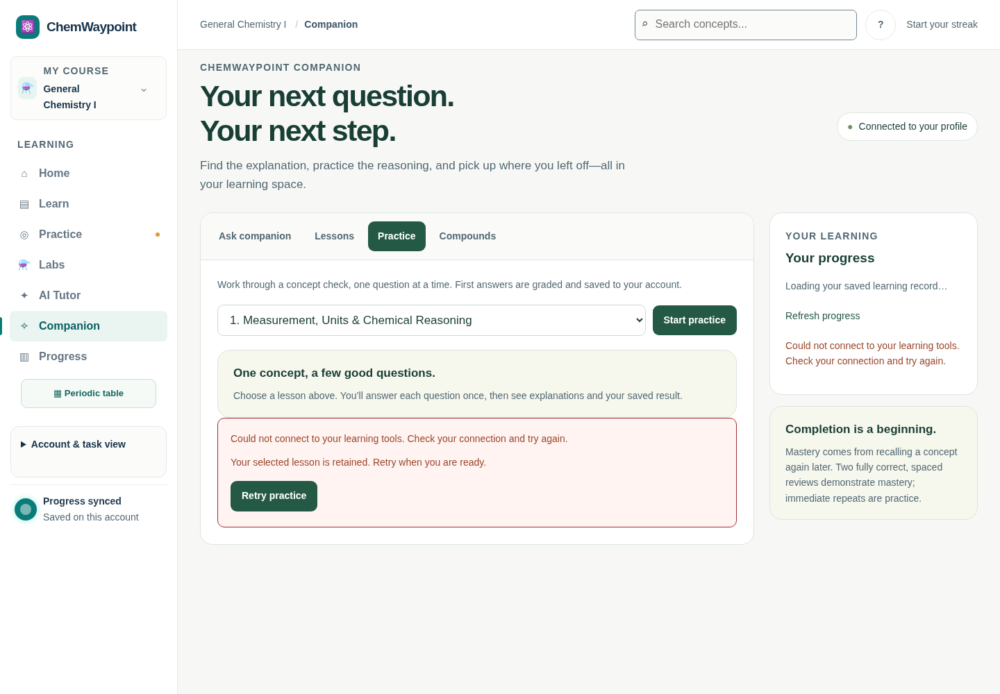
Autofill uses a forced Chromium pseudo-state; native Safari autofill and saved-credential workflows are not certified. Reflow widths720/360 approximate native zoom. No live-service write, deployment or merge was performed.